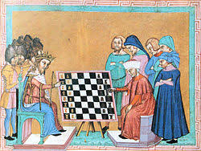
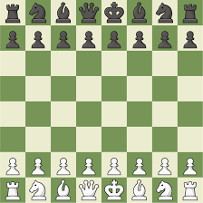

Xadrez
História
Há várias histórias que narram o surgimento do xadrez. A mais conhecida conta sobre um indiano chamado Sissa, que teria criado o jogo a pedido do rei Kaíde. O rei prometeu recompensar Sissa se ele conseguisse desenvolver um jogo realmente interessante. Ele pediu, como recompensa, que um grão de trigo fosse colocado na primeira casa do tabuleiro, dois na segunda casa, quatro na terceira e assim por diante, sempre multiplicando o número por dois até a última casa, que é a de número 64.O rei achou o pedido muito simples e concordou, mas ficou surpreso quando percebeu que a quantidade de trigo necessária chegava ao impressionante número de 18.446.744.073.709.551.615.

Como funciona o jogo?
O Xadrez é um jogo popular de tabuleiro, girando em torno da estratégia, o objetivo de cada jogador é dar Xeque-mate no adversário, ou seja, atacar o rei do adversário de forma que ele não consiga se defender, as peças do Xadrez são: 8 peões, 2 cavalos, dois bispos, duas torres, um rei e uma rainha(popularmente chamada de Dama). sendo o rei a peça mais importante, a organização segue o modelo abaixo.

No Xadrez cada peça tem um movimento único e valores diferentes e um segmento de regras básicas importantes e distintas, cada peça se move de forma diferente e captura sobreponto a peça do adversário, com a única exceção sendo o "en-passant" uma captura especial e especifica envolvendo peões, as regras básicas do Xadrez estão a seguir no vídeo abaixo